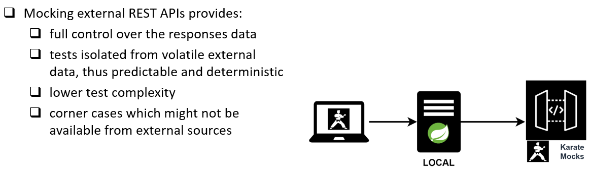
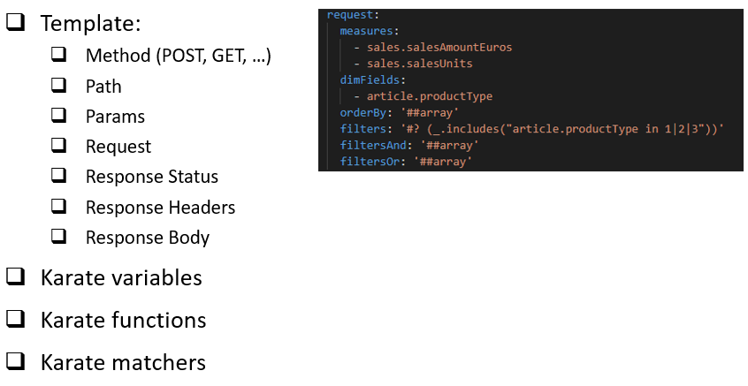
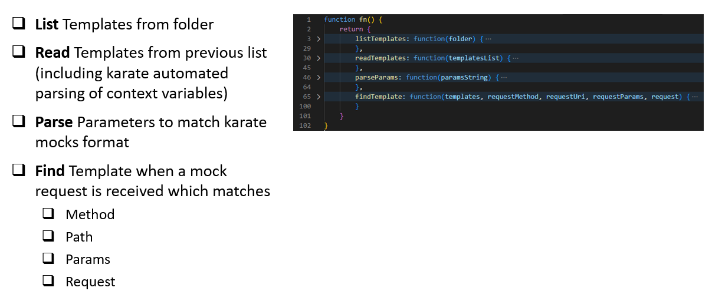
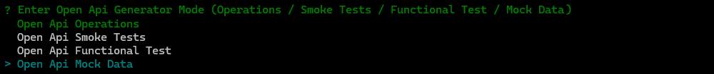
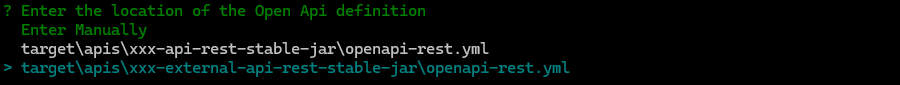
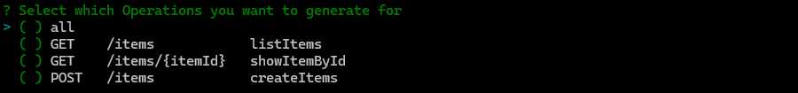
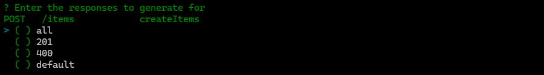
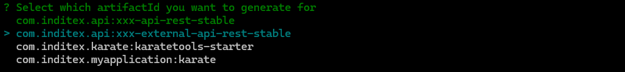
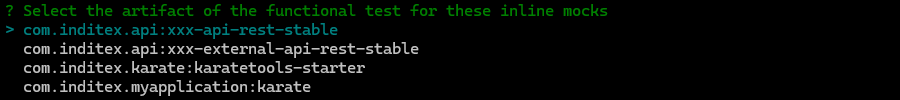

Karate Tools Mock Server is a feature to support the Mocking external REST APIs
Mocking external REST APIs provides:
-
Full control over the responses data
-
Tests isolated from volatile external data, thus predictable and deterministic
-
Lower test complexity
-
Corner cases which might not be available from external sources

The REST API Mocks are based on Mock Templates
Mock Templates are composed of:
-
Method (POST, GET, …)
-
Path
-
Params
-
Request
-
Response Status
-
Response Headers
-
Response Body
Mock Templates can use the following karate features as part of the mock data to filter the templates:
-
Karate variables
-
Karate functions
-
Karate matchers

Karate Tools Mock Server process is as follows:
-
List Templates from folder
-
Read Templates from previous list (including karate automated parsing of context variables)
-
Parse Parameters to match karate mocks format
-
Find Template when a mock request is received which matches
-
Method
-
Path
-
Params
-
Request
-

Karate Tools Mock Server supports two types of mocks:
-
Standalone where the mocks are shared by all the tests and the mock server is started by karate as a Before Everything Hook for the entire test suite. With this strategy you only need to define the shared mocks.
-
Inline where the mocks are related to a specific test and the mock server is started as part of the test Background and shut down after the test completes. With this strategy you need to define the mocks test by test.
| Standalone and Inline must not be used at the same time, even if it’s for different tests, for the same external service since it will cause port collision. We recommend to choose one strategy or the other. |
| If the project has been generated using the Karate Tools Archetype the project will already contain all the files needed for the execution of the karate mock server. |
Generation of Mock Data using open-api-generator
Karate Mock Data: Generates mock data for the choosen combination of Open API paths and response codes of external APIs. The mock data files are meant to be used by the karate mock server to simulate the behaviour of the external APIs.
-
The generation steps are the following:
-
Enter the location of the Open Api definition
-
Select which Operations (path and method) you want to generate for
-
For each selected path and method, select the response code(s) to generate for
-
Select the artifactId you want to generate for
-
Select if the mocks are standalone or to be included in a functional test (Inline)
-
When inline Select the artifact of the functional test for these inline mocks
-
When inline Enter the name of the functional test for these inline mocks
-
-
-
After the automatic generation the mock data files should be updated regarding the corresponding path, params, request and response bodies to match needed mocking scenarios. Karate variables, matchers and functions can be used as part of the mock data.
Execute open-api-generator - Mock Data
Execute open-api-generator and select generation mode "Mock Data".
mvn exec:java@open-api-generator
Select generation mode using the up/down arrows ↑ ↓ and afterwards intro to proceed ↲ to next step.
|
? Enter Open Api Generator Mode (Operations / Smoke Tests / Functional Test / Mock Data)
Open Api Operations
Open Api Smoke Tests
Open Api Functional Test
> Open Api Mock Data
1. Enter the location of the Open Api definition
For generation mode Open Api Mock Data, the open-api-generator will search for the openapi-rest.yml files in the karate module folders and list them to be chosen for open-api-generation.
? Enter Open Api Generator Mode (Operations / Smoke Tests / Functional Test / Mock Data) Open Api Mock Data
? Enter the location of the Open Api definition
Enter Manually
target\apis\xxx-api-rest-stable-jar\openapi-rest.yml
> target\apis\xxx-external-api-rest-stable-jar\openapi-rest.yml
Select open api definiton using the up/down arrows ↑ ↓ and afterwards intro to proceed ↲ to next step.
|

It will also allow to enter the file location manually by selecting Enter Manually
? Enter Open Api Generator Mode (Operations / Smoke Tests / Functional Test / Mock Data) Open Api Mock Data
? Enter the location of the Open Api definition Enter Manually
? Enter the location of the Open Api definition (Enter Manually) target\apis\xxx-external-api-rest-stable-jar\openapi-rest.yml
|
If no Open Api file is provided or if the Open Api file is invalid an error will be displayed:
|
2. Select which Operations (path and method) you want to generate for
For the selected openapi-rest.yml file, the open-api-generator will list all the paths and methods from which mock data files can be generated.
? Enter Open Api Generator Mode (Operations / Smoke Tests / Functional Test / Mock Data) Open Api Mock Data
? Enter the location of the Open Api definition target\apis\xxx-external-api-rest-stable-jar\openapi-rest.yml
? Select which Operations you want to generate for
> (*) all
( ) GET /items/{itemId} showItemById
( ) POST /items createItems
( ) GET /items listItems
Select methods & paths using the up/down arrows ↑ ↓, mark/unmark the selection with space and afterwards intro to proceed ↲ to next step.
|

|
If no Operations are selected an error will be displayed:
|
3. For each selected path and method, select the response code to generate for
For each selected path and method, the open-api-generator will list all the response codes defined. You must select which return code(s) you want to use in the mock data.
? Enter Open Api Generator Mode (Operations / Smoke Tests / Functional Test / Mock Data) Open Api Mock Data
? Enter the location of the Open Api definition target\apis\xxx-external-api-rest-stable-jar\openapi-rest.yml
? Select which Operations you want to generate for [all]
? Enter the responses to generate for
GET /items listItems
> ( ) all
( ) 200
( ) 400
( ) default
Select response code(s) using the up/down arrows ↑ ↓, mark/unmark the selection with space and afterwards intro to proceed ↲ to next step.
|

|
If no Responses are selected an error will be displayed:
|
4. Select the artifactId you want to generate for
Once the operations are selected, the open-api-generator will list all the artifacts defined in the pom.xml to choose the target artifact for the mock data.
You must select the artifact Id of the External Open Api (com.mypackage.api:xxx-external-api-rest-stable)
|
? Enter Open Api Generator Mode (Operations / Smoke Tests / Functional Test / Mock Data) Open Api Mock Data
? Enter the location of the Open Api definition target\apis\xxx-external-api-rest-stable-jar\openapi-rest.yml
? Select which Operations you want to generate for [all]
? Enter the responses to generate for
GET /items listItems [all]
? Enter the responses to generate for
GET /items/{itemId} showItemById [200, 404]
? Enter the responses to generate for
POST /items createItems 201
? Select which artifactId you want to generate for
com.mypackage.api:xxx-api-rest-stable
> com.mypackage.api:xxx-external-api-rest-stable
com.mypackage.karate:karatetools-starter
com.mypackage:karate
...
Select artifactId using the up/down arrows ↑ ↓ and afterwards intro to proceed ↲ to next step.
|

5. Select if the mocks are Standalone or to be included in a functional test (Inline)
Once the target artifact is selected, the open-api-generator will ask if the the mocks are to be included in a functional test (Inline).
-
If inline mocks is NOT selected, the open-api-generator will locate the mocks in the Standalone Mocks folder (
src/test/resources/mocks/templates/standalone/…) -
If inline mocks is selected, the open-api-generator will locate the mocks in the folder of the functional test. The next steps will ask for the functional test artifactId and Test Name.
-
The functional test should have been generated following the instructions in Karate Open Api Generator - Functional Test also indicating that the generated functional test will include inline mocks.
? Enter Open Api Generator Mode (Operations / Smoke Tests / Functional Test / Mock Data) Open Api Mock Data
? Enter the location of the Open Api definition target\apis\xxx-external-api-rest-stable-jar\openapi-rest.yml
? Select which Operations you want to generate for [POST /items createItems ]
? Enter the responses to generate for
POST /items createItems 201
? Select which artifactId you want to generate for com.mypackage.api:xxx-external-api-rest-stable
? Select if the mocks are to be included in a functional test (Inline) (y/N)
Select inline mocks using keys y or n for YES/NO and afterwards intro to proceed ↲ to next step.
|
5.(a) Select the artifact of the functional test for these inline mocks
When inline mocks is selected, the open-api-generator will ask for the artifact of the functional test for these inline mocks.
You must select the artifact Id of the Open Api of the functional test (com.mypackage.api:xxx-api-rest-stable)
|
? Enter Open Api Generator Mode (Operations / Smoke Tests / Functional Test / Mock Data) Open Api Mock Data
? Enter the location of the Open Api definition target\apis\xxx-external-api-rest-stable-jar\openapi-rest.yml
? Select which Operations you want to generate for [POST /items createItems ]
? Enter the responses to generate for
POST /items createItems 201
? Select which artifactId you want to generate for com.mypackage.api:xxx-external-api-rest-stable
? Select if the mocks are to be included in a functional test (Inline) yes
? Select the artifact of the functional test for these inline mocks
> com.mypackage.api:xxx-api-rest-stable
com.mypackage.api:xxx-external-api-rest-stable
com.mypackage.karate:karatetools-starter
com.mypackage:karate
...
Select artifactId using the up/down arrows ↑ ↓ and afterwards intro to proceed ↲ to next step.
|

5.(b) Enter the name of the functional test for these inline mocks
When inline mocks is selected, the open-api-generator will ask for the name of the functional test for these inline mocks.
? Enter Open Api Generator Mode (Operations / Smoke Tests / Functional Test / Mock Data) Open Api Mock Data
? Enter the location of the Open Api definition target\apis\xxx-external-api-rest-stable-jar\openapi-rest.yml
? Select which Operations you want to generate for [POST /items createItems ]
? Enter the responses to generate for
POST /items createItems 201
? Select which artifactId you want to generate for com.mypackage.api:xxx-external-api-rest-stable
? Select if the mocks are to be included in a functional test (Inline) yes
? Select the artifact of the functional test for these inline mocks com.mypackage.api:xxx-api-rest-stable
? Enter the name of the functional test for these inline mocks|
If no Test Name is provided an error will be displayed:
|
Review Generated mock data
For each selected combination the open-api-generator generates:
-
mock data files with the mock data for each of the selected operations and response codes.
The mock files are generated in the corresponding folder beneath src/test/resources based on the type:
-
Standalone
-
mocks/templates/standalone/<ARTIFACT_ID>/<OPERATION_TAG> -
Example:
-
src/test/resources/mocks/templates/standalone/xxx-external-api-rest-stable/BasicApi/
-
-
Inline
-
<FUNCTIONAL_TEST_ARTIFACT_ID_PATH>/functional/<FUNCTIONAL_TEST_NAME>/mocks/<ARTIFACT_ID>/<OPERATION_TAG> -
Example:
-
src/test/resources/com/mypackage/api/xxx-api-rest-stable/functional/CreateItemsWithInlineMocks/mocks/xxx-external-api-rest-stable/BasicApi/
-
Example of the structure of the generated mock data:
-
Standalone
+---src \---test \---resources \---mocks \---templates \---standalone \---xxx-external-api-rest-stable \---BasicApi XXXX_createItems_201.yml XXXX_createItems_400.yml XXXX_createItems_default.yml XXXX_listItems_200.yml XXXX_listItems_400.yml XXXX_listItems_default.yml XXXX_showItemById_200.yml XXXX_showItemById_404.yml XXXX_showItemById_default.yml -
Inline (in this example we are using the same API for the tests and the mocks)
+---src \---test \---resources \---com \---mypackage \---api \---xxx-api-rest-stable \---functional \---CreateItemsWithInlineMocks | CreateItemsWithInlineMocks.feature | +---mocks | \---xxx-external-api-rest-stable | \---BasicApi | XXXX_createItems_201.yml | \---test-data createItems_201.yml
The mock files should be numbered in order of prececendence, for example: 0001, … , 0099, 0101, … ,0199, 0201, … , 0299
|
Example of numbering of the generated mock data files:
0001_createItems_201.yml
0002_createItems_400.yml
0099_createItems_default.yml
0101_listItems_200.yml
0102_listItems_400.yml
0199_listItems_default.yml
0201_showItemById_200.yml
0202_showItemById_404.yml
0299_showItemById_default.ymlMock data files
mock data files with the data needed for the execution of the mock server. For example:
-
XXXX_createItems_201.yml:--- operationId: "createItems" method: "POST" path: "/items" params: null request: id: 0 name: "string" tag: "string" responseStatus: 201 responseHeaders: Content-Type: "application/json" response: id: 0 name: "string" tag: "string" -
XXXX_listItems_200.yml:--- operationId: "listItems" method: "GET" path: "/items" params: "limit=0" request: null responseStatus: 200 responseHeaders: Content-Type: "application/json" response: - id: 0 name: "string" tag: "string" -
XXXX_showItemById_200.yml:--- operationId: "showItemById" method: "GET" path: "/items/{itemId}" params: null request: null responseStatus: 200 responseHeaders: Content-Type: "application/json" response: id: 0 name: "string" tag: "string"
| The data (path, params, request, response) in each of the mock data files must be updated to fulfill the test purpose. |
If the api defines default response codes, the responseStatus of the mock data will be set to null and will require manual update.
|